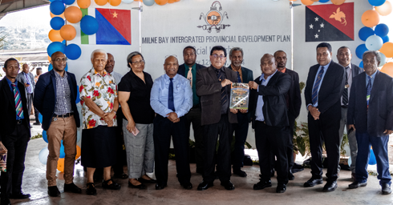
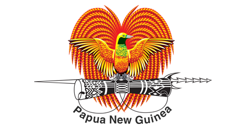
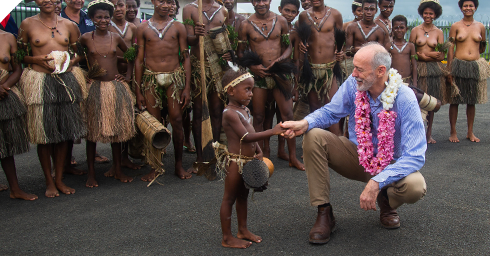
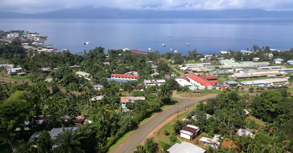
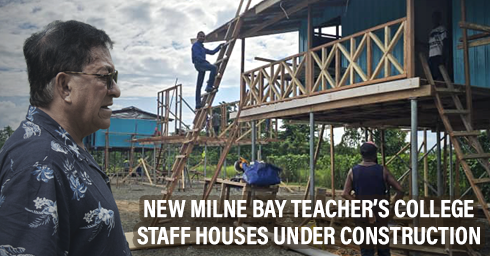

About the IPDP
The Integrated Provincial Development Plan 2023-2027 aims to enhance economic growth, infrastructure development, and service delivery in Milne Bay Province. This plan is aligned with Vision 2050, PNGDSP 2030, and MTDP IV.
Policy Framework
The policy framework for the Milne Bay Provincial Development Plan is structured around three key components:
- Legal Framework: The development plan aligns with national policies such as Vision 2050, PNGDSP 2030, and MTDP IV. It operates within the constitutional and regulatory structures governing provincial administration, ensuring compliance with statutory requirements.
- Financial Framework: Funding mechanisms include government allocations, development grants, and private sector partnerships. Emphasis is placed on transparent financial management and accountability to maximize resource utilization.
- Service Delivery Framework: The plan prioritizes effective service delivery through decentralized governance, community engagement, and capacity-building initiatives. Focus areas include education, health, infrastructure, and economic empowerment to enhance public welfare.
Strategic Priority Areas
Promoting agriculture, MSMEs, fisheries, and tourism development to create job opportunities and improve livelihoods.
Projects & Investments
Ongoing projects include the Alotau-Gurney Highway upgrade, expansion of rural electrification, construction of new hospitals, and development of Special Economic Zones.
Provincial Profile

Milne Bay is a maritime province with a population of over 276,000 people. The province has significant economic potential in agriculture, tourism, and fisheries.
News & Updates
Latest updates include funding approvals, project launches, and community engagement activities.
Contact & Feedback

Email: milnbayprovgov@outlook.com | Phone: +675 7273 9000 | Address: Milne Bay Provincial Government, Alotau, Papua New Guinea.